Восстановление водоёма
- Подъём уровня воды
- Возвращение флоры и фауны
- Кормление, мониторинг, зимняя аэрация
Общественный фонд ЭФРА с 2017 года восстанавливает озеро Карасу и реку Правый Есентай на северо-западе Алматы — вместе с жителями, учёными, бизнесом и городом.
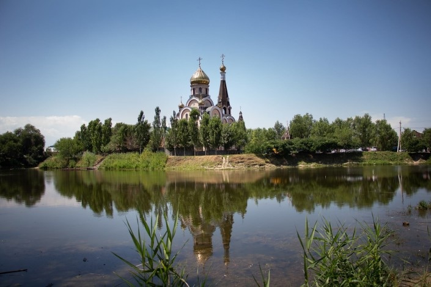
Озеро Карасу, АлматыС 2017 года мы работаем с 9 700 жителями Карасу. Наш первый проект привёл ≈ $2 млн городских инвестиций в парк и очистку озера, из которого начинается река длиной 21 км.
ОФ «Экологический Фонд Развития Алматы» создан в июле 2017 года, чтобы сохранять природные объекты и заниматься экологическим просвещением местных сообществ.
Мы верим, что природа — источник жизни, а люди отвечают за её сохранение. Каждый может внести вклад: взять под защиту озеро, дерево, луг или небольшую речку рядом с собой. Наша задача — просвещать, вовлекать людей в охрану природы и менять их отношение к окружающей среде.
Думай глобально, действуй локально
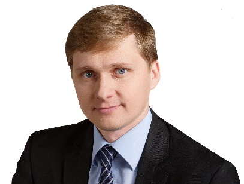
Выпускник стипендий Chevening и Fulbright, инвестиционный и ESG-менеджер. Работал в Самрук-Казына, KAZ Minerals и The Nature Conservancy.
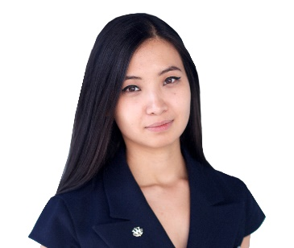
Региональный директор Cushman & Wakefield, эксперт BREEAM, член Градостроительного совета Алматы.
Озеро Карасу лежит в центре одноимённого микрорайона на северо-западе Алматы. Здесь на поверхность выходят подземные воды — и отсюда берёт начало река Правый Есентай.
Правый Есентай — малый приток Малой Алматинки, которая впадает в Каскелен. Эти реки дают воду сельскому хозяйству Алматинской области и вместе с Или питают Капшагайское водохранилище.
Русло нанесено по данным OpenStreetMap, участок около 16 км.
От исчезновения питавших озеро речек до общего плана, который должен сделать его живым на десятилетия вперёд.
Из-за бесконтрольной застройки и изменения климата исчезли две речки, питавшие озеро. С тех пор оно живёт только за счёт подземных вод.
Мы объединили жителей, благоустроили часть территории и подготовили полный пакет документов для регенерации. Архитектор Асель Ежанова разработала дизайн-проект парка у озера.
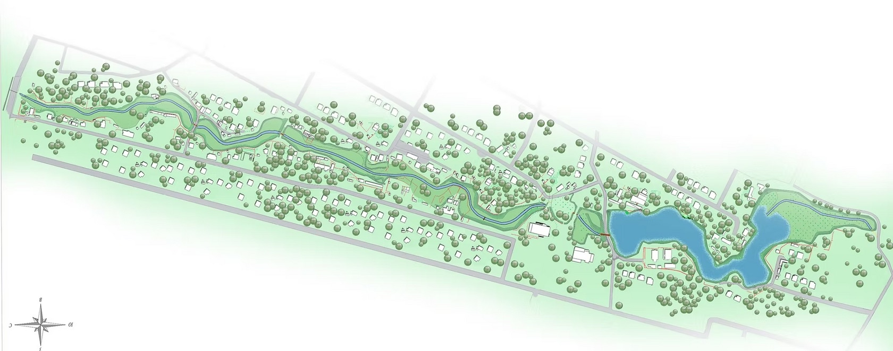
По нашему проекту акимат Алматы построил зелёную зону и амфитеатр у озера. Вместе с последующей очисткой это около $2 млн городских инвестиций.
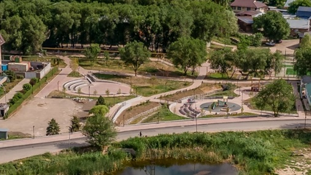
В ноябре 2023 года город спустил озеро для механической очистки. Часть обитателей ушла в соседние водоёмы — пруд у храма и габионный канал Правого Есентая, остальные погибли.
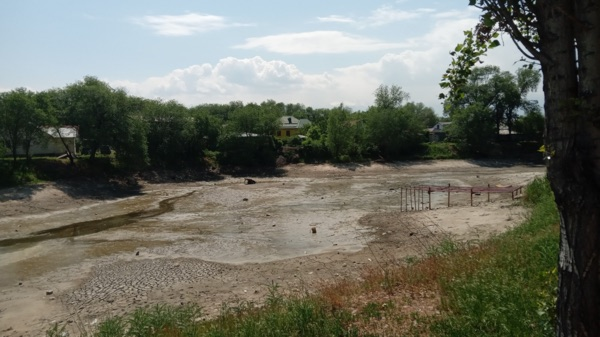
Вместе с насосной станцией поднимаем уровень воды, вносим хлореллу, зарыбляем озеро и проводим зимнюю аэрацию. Готовим план сохранения озера и план климатической адаптации.
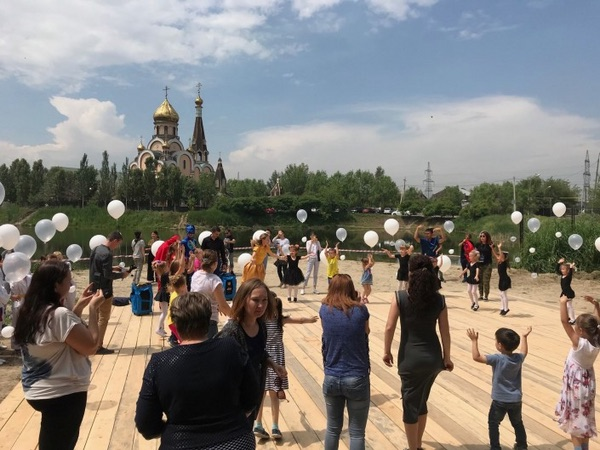
Реализуем планы сохранения и адаптации, создаём Комитет устойчивого развития экосистемы озера и начинаем восстанавливать русло Правого Есентая.
Мы хотим вернуть всех, кто здесь жил, — и в первую очередь два уязвимых вида из Красного списка МСОП.
Широкопалый рак и среднеазиатская черепаха — главные цели восстановления после 2025 года.
Змееголов истребляет другие виды, поэтому его исключают из экосистемы озера.
Чистая вода и живые берега привлекут больше сезонных птиц.
Рядом с озером — храм, мечеть, площадь и парк. Это место отдыха и встреч для 9 700 жителей, среди которых русские, корейцы, турки, уйгуры, немцы и многие другие.
Мы хотим сохранить озеро как часть архитектурного ансамбля и место, где жители проводят время вместе.
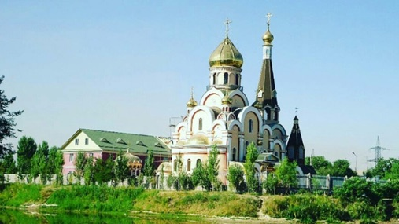
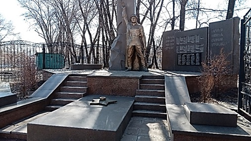
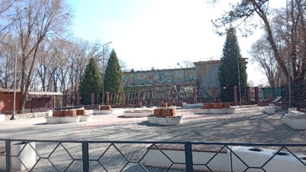
Мы занимаемся не только озером. Фонд изучает, как экологические проекты в Казахстане могут окупаться и спасать жизни, и публикует результаты в рецензируемых журналах.

Central Asian Journal of Sustainability and Climate Research, 2024, т. 3, № 1, с. 96–125
Метан угольных шахт в Казахстане: экономический и экологический анализ
Подробный разбор с графиками — контекст, методика, чувствительность, сценарии финансирования и рекомендации, — а также программа общественного мониторинга «Живые водоёмы Алматы».
Все исследования подробноЛюди, которые каждый день работают над возвращением жизни озеру.
Отвечает за стратегию фонда, устойчивое финансирование и партнёрства.
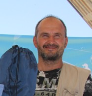
Житель Карасу, в проекте с 2017 года. Построил амфитеатр, провёл события сообщества, ведёт восстановление озера и зарыбление.
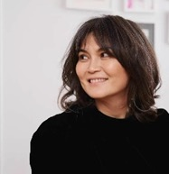
Архитектор Urban Forum Kazakhstan. Автор дизайн-проекта парка у озера, проводит события и экопросвещение для молодёжи.
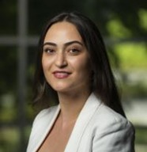
Более 10 лет в природоохранных проектах. Готовит план сохранения озера и стратегию климатической адаптации.
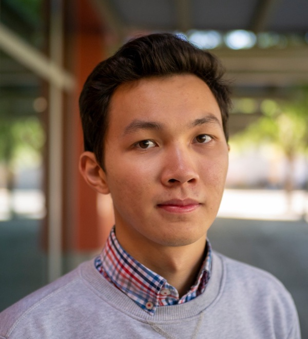
Соавтор исследования о метане угольных шахт Казахстана, опубликованного в 2024 году.
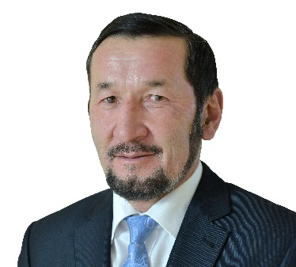
Публицист, член Союза журналистов, писатель, автор документальных фильмов о природе.
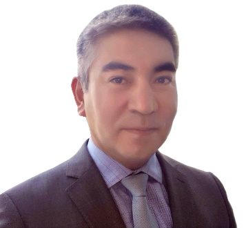
Экс-управляющий директор Фонда Самрук-Казына, выпускник University of San Francisco.
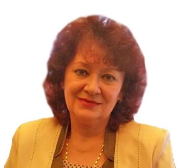
Учитель биологии и географии высшей категории в школах Алматы.
Бизнес, международные фонды, НКО и научные организации — каждый внёс свой вклад в восстановление озера.
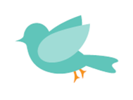
Грузия. Разрабатывает план сохранения озера и климатической адаптации, участвует во всех этапах.
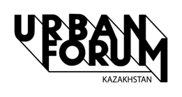
Независимая площадка для диалога горожан, власти и бизнеса. Связывает жителей Карасу с акиматом.
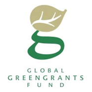
Международный фонд поддержки местных экологических инициатив. Финансирование и экспертиза.
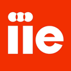
Глобальная организация в сфере международного образования. Финансирование и участие в проекте.
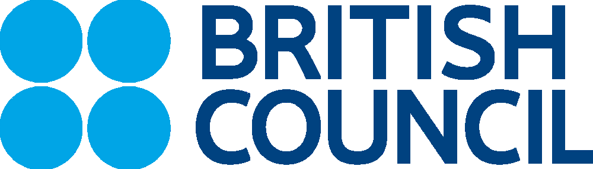
Грант программы Smart City Almaty, финансируемой Еврокомиссией, на городские инициативы сообществ.
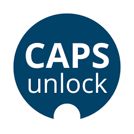
Грант программы «Лучший социальный проект в нецентральных районах Алматы».
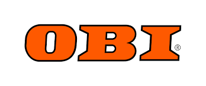
Строительные материалы для благоустройства и экологических работ у озера.
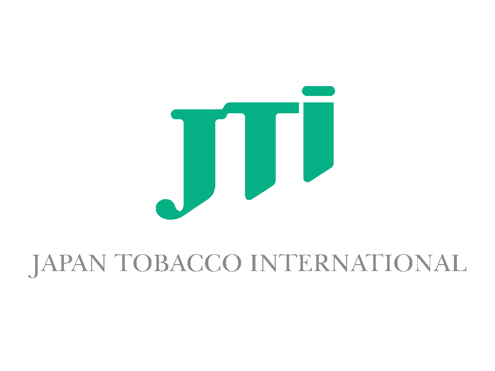
Поддержка развития сообщества и зелёных пространств в рамках программ корпоративной ответственности.
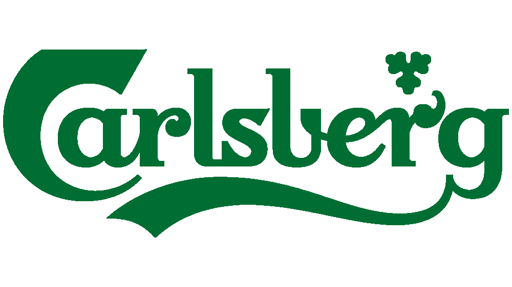
Поддержка инициатив по сохранению воды, биоразнообразия и вовлечению сообществ.
Мониторинг видов, уборки, события у озера и занятия с детьми.
Компании и фонды могут поддержать проект ресурсами, экспертизой или финансированием.
Подпишитесь на наш Facebook и делитесь новостями проекта.